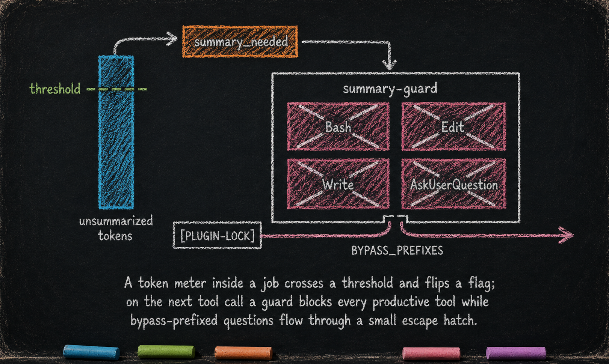

Mega-Prompt Compression — interaction_summary
Essay 5.5 — The Always-On Digital Cortex, Part 5 of 9.
Essay 5.4 named the cumulative mega-prompt — every prompt, every Q&A, appended into the same job’s interaction list. That list grows. Past a few hundred turns, it stops fitting cleanly in context. This part covers the plugin that keeps it legible.
What it owns
interaction_summary exists to keep a job’s dynamic mega-prompt legible as it grows. It works by counting tokens after every user interaction and forcing the agent to draft a structured summary the moment the unsummarized portion crosses a threshold. It applies inside any job whose interaction list grows long enough to compress — short jobs that never cross the threshold never see the plugin engage. ⓘ
How it works — block until summarized

Enforcement runs in two phases. A post-call hook fires right after job_core records each interaction, approximates the unsummarized portion in tokens, and trips a flag when the result crosses a threshold. On the next tool call, a pre-call guard blocks every productive tool the agent has — reads, writes, shell calls, even further questions — until a structured summary lands. The submit command refuses just any text: the summary must sit inside a tight word-count band and carry five named sections — User Requests, Questions & Decisions, Design Choices, Corrections & Feedback, Current State — each long enough to actually mean something. The same shape compels production trick brain_guard uses on its compaction file, applied to a different concern. ⓘ
The block is total — every productive tool, every question. The single escape path is summary.sh submit, the dedicated summary-submission command the guard’s Bash whitelist explicitly admits; submitting a valid summary clears the flag, the gate releases, and any pending work resumes on the next turn. No parallel question-bypass list, no special-case prefixes — the discipline is one shape: submit the summary, then continue. The summary chain itself is append-only and lives entirely in the plugin’s hidden state; older entries cannot be rewritten. ⓘ
What would break without it
Without this plugin, long jobs lose narrative coherence as the interaction list bloats; the summary chain is what keeps a job legible at a glance and what survives forward when the job spans more than one OPEVC cycle. ⓘ
What you would customize
interaction_summary is the second always-on plugin where the shape is the lesson and the names are your prototype’s answer. Almost every parameter has a defensible reason to move.
You would tune the threshold — the token count at which the gate trips. The current ~500-token threshold balances summarization overhead against narrative coherence. A seed running shorter, sharper exchanges may want to trip at 250 tokens; a seed running longer interactions (chemical-engineering reviews, legal-citation walks) may comfortably stretch to 1,000. ⓘ
You would re-shape the 5-section template. The current sections — User Requests, Questions & Decisions, Design Choices, Corrections & Feedback, Current State — encode what this prototype values in its summary chain. Your seed will value different things. A research seed may want "Sources cited / Hypotheses tested / Open questions" sections. A consulting seed may want "Client goals / Constraints surfaced / Action items." A legal-research seed may want "Statutes referenced / Precedents reviewed / Open conflicts." The five sections aren’t gospel. The shape — required headers, word-count band per section, append-only chain — is. ⓘ
You would tune the summary length band and the per-section depth floor. The current shape requires every accepted summary to land inside a token range (the prototype defaults to a roughly 200-1000 token band) and every named section to carry at least a minimum depth of real content (the prototype floors each section at a substantive minimum). A seed running shallow exchanges may want a tighter band and lower per-section floors so summaries stay brisk. A seed running deep technical reviews — chemical-engineering walkthroughs, legal-citation traces — may want a wider band and higher per-section floors that prevent stub sections from sliding through. All three knobs live in config.conf as plain shell variables; the architect tunes per seed without touching any hook or script. ⓘ
You would change the summarization shape itself. The current shape is append-only chain — one block of five sections per crossing, accumulated forever. Hierarchical summaries (summary-of-summaries every N entries), topic-tagged summaries (separate chains for separate concerns), or domain-specific summary schemas (Q&A pair structure for support seeds, decision-log structure for governance seeds) are all defensible shapes for the same architectural fact: long jobs need legible mega-prompt compression. The chain mechanism is the architecture; what you put in each entry is yours. ⓘ
What you would not do is let the mega-prompt grow without compression. Without the gate, a job that crosses ten cycles becomes unreadable; the next session loses the narrative thread; the agent starts drifting from prior decisions. The gate is the floor; the format above it is yours.
The next part covers the plugin that gates every question the seed agent asks the user — the asking surface for every ceremony in the rest of the architecture.
Essay 5.5 — The Always-On Digital Cortex, Part 5 of 9.
Previous: Essay 5.4 — Job Lifecycle — job_core — the unit of compartmentalization and the dynamic mega-prompt. Next: Essay 5.6 — Structured Questions — question_discipline — the registered-prefix gate that powers every ceremony.
Comments